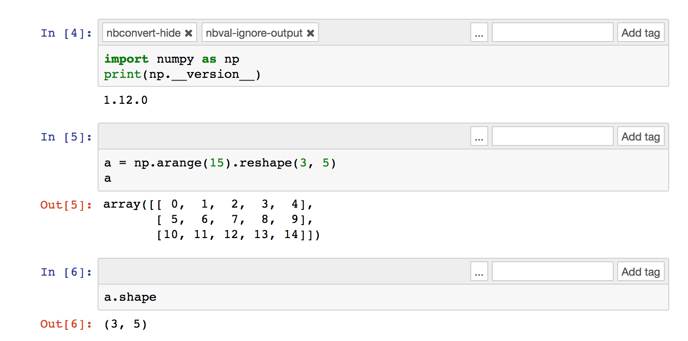
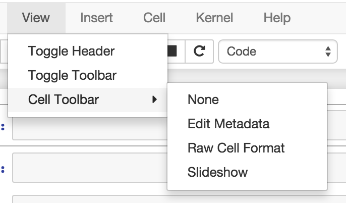
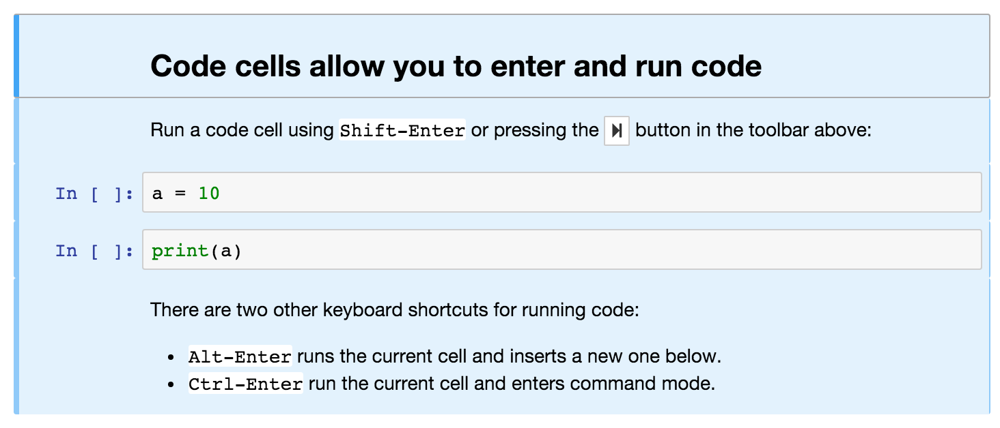

Jupyter notebook changelog¶
A summary of changes in the Jupyter notebook. For more detailed information, see GitHub.
ちなみに
Use pip install notebook --upgrade or conda upgrade notebook to
upgrade to the latest release.
We strongly recommend that you upgrade to version 9+ of pip before upgrading notebook.
ちなみに
Use pip install pip --upgrade to upgrade pip. Check pip version with
pip --version.
5.2.0¶
- Make all files in the dashboard editable by default and provide a whitelist of viewable file extensions (PR #2911).
- Ensure that the root directory is not hidden (PR #2907).
- Fix CodeMirror styling issue (PR #2880).
- Update error handling on
APIHandlers(PR #2853). - Upgrade xterm.js to 2.9.2 (PR #2849).
- Add Chinese translations (depends on upcoming UI implementation) (PR #2804).
- Allow for simpler customization of
output_promptin custom.js (PR #2774). - Use RFC5987 encoding for filenames (PR #2767).
- Add path to the resources metadata (PR #2753).
- Make
extraKeysconsistent between notebook and editor views (PR #2745). - Add RTL (right-to-left) support (PR #2357).
Special thanks to samarsultan and the Arabic Competence and Globalization Center Team at IBM Egypt for adding RTL (right-to-left) support to the notebook!
See the 5.2 milestone on GitHub for a complete list of issues and pull requests involved in this release.
5.1.0¶
- Preliminary i18n implementation (PR #2140).
- Expose URL with auth token in notebook UI (PR #2666).
- Fix search background style (PR #2387).
- List running notebooks without requiring
--allow-root(PR #2421). - Allow session of type other than notebook (PR #2559).
- Fix search background style (PR #2387).
- Fix some Markdown styling issues (PR #2571), (PR #2691) and (PR #2534).
- Remove keymaps that conflict with non-English keyboards (PR #2535).
- Add session-specific favicons (notebook, terminal, file) (PR #2452).
- Add /api/shutdown handler (PR #2507).
- Include metadata when copying a cell (PR #2349).
- Stop notebook server from command line (PR #2388).
- Improve 「View」 and 「Edit」 file handling in dashboard (PR #2449) and (PR #2402).
- Provide a promise to replace use of the
app_initialized.NotebookAppevent (PR #2710). - Fix disabled collapse/expand output button (PR #2681).
- Cull idle kernels using
--MappingKernelManager.cull_idle_timeout(PR #2215). - Allow read-only notebooks to be trusted (PR #2718).
See the 5.1 milestone on GitHub for a complete list of issues and pull requests involved in this release.
5.0.0¶
This is the first major release of the Jupyter Notebook since version 4.0 was created by the 「Big Split」 of IPython and Jupyter.
We encourage users to start trying JupyterLab in preparation for a future transition.
We have merged more than 300 pull requests since 4.0. Some of the major user-facing changes are described here.
File sorting in the dashboard¶
Files in the dashboard may now be sorted by last modified date or name (PR #943):

Cell tags¶
There is a new cell toolbar for adding cell tags (PR #2048):
Cell tags are a lightweight way to customise the behaviour of tools working with
notebooks; we’re working on building support for them into tools like nbconvert and nbval. To start using tags,
select Tags in the View > Cell Toolbar menu in a notebook.
The UI for editing cell tags is basic for now; we hope to improve it in future releases.
Table style¶
The default styling for tables in the notebook has been updated (PR #1776).
Before:
After:
Customise keyboard shortcuts¶
You can now edit keyboard shortcuts for Command Mode within the UI (PR #1347):

See the Help > Edit Keyboard Shortcuts menu item and follow the instructions.
Other additions¶
- You can copy and paste cells between notebooks, using
Ctrl-CandCtrl-V(Cmd-CandCmd-Von Mac). - It’s easier to configure a password for the notebook with the new
jupyter notebook passwordcommand (PR #2007). - The file list can now be ordered by last modified or by name (PR #943).
- Markdown cells now support attachments. Simply drag and drop an image from your desktop to a markdown cell to add it. Unlike relative links that you enter manually, attachments are embedded in the notebook itself. An unreferenced attachment will be automatically scrubbed from the notebook on save (PR #621).
- Undoing cell deletion now supports undeleting multiple cells. Cells may not be in the same order as before their deletion, depending on the actions you did on the meantime, but this should should help reduce the impact of accidentally deleting code.
- The file browser now has Edit and View buttons.
- The file browser now supports moving multiple files at once (PR #1088).
- The Notebook will refuse to run as root unless the
--allow-rootflag is given (PR #1115). - Keyboard shortcuts are now declarative (PR #1234).
- Toggling line numbers can now affect all cells (PR #1312).
- Add more visible Trusted and Untrusted notifications (PR #1658).
- The favicon (browser shortcut icon) now changes to indicate when the kernel is busy (PR #1837).
- Header and toolbar visibility is now persisted in nbconfig and across sessions (PR #1769).
- Load server extensions with ConfigManager so that merge happens recursively, unlike normal config values, to make it load more consistently with frontend extensions(PR #2108).
- The notebook server now supports the bundler API from the jupyter_cms incubator project (PR #1579).
- The notebook server now provides information about kernel activity in its kernel resource API (PR #1827).
Remember that upgrading notebook only affects the user
interface. Upgrading kernels and libraries may also provide new features,
better stability and integration with the notebook interface.
4.4.0¶
- Allow override of output callbacks to redirect output messages. This is used to implement the ipywidgets Output widget, for example.
- Fix an async bug in message handling by allowing comm message handlers to return a promise which halts message processing until the promise resolves.
See the 4.4 milestone on GitHub for a complete list of issues and pull requests involved in this release.
4.3.2¶
4.3.2 is a patch release with a bug fix for CodeMirror and improved handling of the 「editable」 cell metadata field.
- Monkey-patch for CodeMirror that resolves #2037 without breaking #1967
- Read-only (
"editable": false) cells can be executed but cannot be split, merged, or deleted
See the 4.3.2 milestone on GitHub for a complete list of issues and pull requests involved in this release.
4.3.1¶
4.3.1 is a patch release with a security patch, a couple bug fixes, and improvements to the newly-released token authentication.
Security fix:
- CVE-2016-9971. Fix CSRF vulnerability, where malicious forms could create untitled files and start kernels (no remote execution or modification of existing files) for users of certain browsers (Firefox, Internet Explorer / Edge). All previous notebook releases are affected.
Bug fixes:
- Fix carriage return handling
- Make the font size more robust against fickle browsers
- Ignore resize events that bubbled up and didn’t come from window
- Add Authorization to allowed CORS headers
- Downgrade CodeMirror to 5.16 while we figure out issues in Safari
Other improvements:
- Better docs for token-based authentication
- Further highlight token info in log output when autogenerated
See the 4.3.1 milestone on GitHub for a complete list of issues and pull requests involved in this release.
4.3.0¶
4.3 is a minor release with many bug fixes and improvements.
The biggest user-facing change is the addition of token authentication,
which is enabled by default.
A token is generated and used when your browser is opened automatically,
so you shouldn’t have to enter anything in the default circumstances.
If you see a login page
(e.g. by switching browsers, or launching on a new port with --no-browser),
you get a login URL with the token from the command jupyter notebook list,
which you can paste into your browser.
Highlights:
- API for creating mime-type based renderer extensions using
OutputArea.register_mime_typeandNotebook.render_cell_outputmethods. See mimerender-cookiecutter for reference implementations and cookiecutter. - Enable token authentication by default. See Security in the Jupyter notebook server for more details.
- Update security docs to reflect new signature system
- Switched from term.js to xterm.js
Bug fixes:
- Ensure variable is set if exc_info is falsey
- Catch and log handler exceptions in
events.trigger - Add debug log for static file paths
- Don’t check origin on token-authenticated requests
- Remove leftover print statement
- Fix highlighting of Python code blocks
json_errorsshould be outermost decorator on API handlers- Fix remove old nbserver info files
- Fix notebook mime type on download links
- Fix carriage symbol bahvior
- Fix terminal styles
- Update dead links in docs
- If kernel is broken, start a new session
- Include cross-origin check when allowing login URL redirects
Other improvements:
- Allow JSON output data with mime type
application/*+json - Allow kernelspecs to have spaces in them for backward compat
- Allow websocket connections from scripts
- Allow
Nonefor post_save_hook - Upgrade CodeMirror to 5.21
- Upgrade xterm to 2.1.0
- Docs for using comms
- Set
dirtyflag when output arrives - Set
ws-urldata attribute when accessing a notebook terminal - Add base aliases for nbextensions
- Include
@operator in CodeMirror IPython mode - Extend mathjax_url docstring
- Load nbextension in predictable order
- Improve the error messages for nbextensions
- Include cross-origin check when allowing login URL redirects
See the 4.3 milestone on GitHub for a complete list of issues and pull requests involved in this release.
4.2.3¶
4.2.3 is a small bugfix release on 4.2.
Highlights:
- Fix regression in 4.2.2 that delayed loading custom.js
until after
notebook_loadedandapp_initializedevents have fired. - Fix some outdated docs and links.
参考
4.2.3 on GitHub.
4.2.2¶
4.2.2 is a small bugfix release on 4.2, with an important security fix. All users are strongly encouraged to upgrade to 4.2.2.
Highlights:
- Security fix: CVE-2016-6524, where untrusted latex output could be added to the page in a way that could execute javascript.
- Fix missing POST in OPTIONS responses.
- Fix for downloading non-ascii filenames.
- Avoid clobbering ssl_options, so that users can specify more detailed SSL configuration.
- Fix inverted load order in nbconfig, so user config has highest priority.
- Improved error messages here and there.
参考
4.2.2 on GitHub.
4.2.1¶
4.2.1 is a small bugfix release on 4.2. Highlights:
- Compatibility fixes for some versions of ipywidgets
- Fix for ignored CSS on Windows
- Fix specifying destination when installing nbextensions
参考
4.2.1 on GitHub.
4.2.0¶
Release 4.2 adds a new API for enabling and installing extensions. Extensions can now be enabled at the system-level, rather than just per-user. An API is defined for installing directly from a Python package, as well.
Highlighted changes:
- Upgrade MathJax to 2.6 to fix vertical-bar appearing on some equations.
- Restore ability for notebook directory to be root (4.1 regression)
- Large outputs are now throttled, reducing the ability of output floods to kill the browser.
- Fix the notebook ignoring cell executions while a kernel is starting by queueing the messages.
- Fix handling of url prefixes (e.g. JupyterHub) in terminal and edit pages.
- Support nested SVGs in output.
And various other fixes and improvements.
4.1.0¶
Bug fixes:
- Properly reap zombie subprocesses
- Fix cross-origin problems
- Fix double-escaping of the base URL prefix
- Handle invalid unicode filenames more gracefully
- Fix ANSI color-processing
- Send keepalive messages for web terminals
- Fix bugs in the notebook tour
UI changes:
Moved the cell toolbar selector into the View menu. Added a button that triggers a 「hint」 animation to the main toolbar so users can find the new location. (Click here to see a screencast )
Added Restart & Run All to the Kernel menu. Users can also bind it to a keyboard shortcut on action
restart-kernel-and-run-all-cells.Added multiple-cell selection. Users press
Shift-Up/DownorShift-K/Jto extend selection in command mode. Various actions such as cut/copy/paste, execute, and cell type conversions apply to all selected cells.Added a command palette for executing Jupyter actions by name. Users press
Cmd/Ctrl-Shift-Por click the new command palette icon on the toolbar.
Added a Find and Replace dialog to the Edit menu. Users can also press
Fin command mode to show the dialog.
{kind=link}
Other improvements:
- Custom KernelManager methods can be Tornado coroutines, allowing async operations.
- Make clearing output optional when rewriting input with
set_next_input(replace=True). - Added support for TLS client authentication via
--NotebookApp.client-ca. - Added tags to
jupyter/notebookreleases on DockerHub.latestcontinues to track the master branch.
See the 4.1 milestone on GitHub for a complete list of issues and pull requests handled.
4.0.x¶
4.0.6¶
- fix installation of mathjax support files
- fix some double-escape regressions in 4.0.5
- fix a couple of cases where errors could prevent opening a notebook
4.0.5¶
Security fixes for maliciously crafted files.
- CVE-2015-6938: malicious filenames
- CVE-2015-7337: malicious binary files in text editor.
Thanks to Jonathan Kamens at Quantopian and Juan Broullón for the reports.
4.0.4¶
- Fix inclusion of mathjax-safe extension
4.0.2¶
- Fix launching the notebook on Windows
- Fix the path searched for frontend config
4.0.0¶
First release of the notebook as a standalone package.